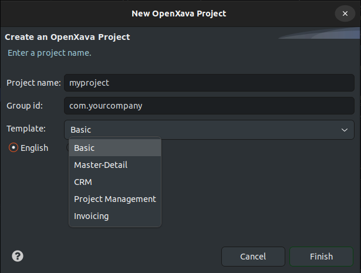

OpenXava cuenta con un conjunto de plantillas de proyecto, o arquetipos
como se llaman en el mundo Java, para que no tengas que empezar tu nuevo
proyecto OpenXava desde cero. Estas plantillas no solo te ahorran tiempo,
sino que contienen muchos ejemplos de código que te pueden ser útiles para
aprender.
Para usar estas plantilla desde
OpenXava Studio, al crear un nuevo proyecto, abre el combo Templates
y escoge una de las plantillas sugeridas:

Si por ejemplo escoges Project Management y pulsas en Finish,
en unos segundos tendrás una aplicación de gestión de proyectos en
OpenXava, lista para funcionar.
Si usas IntelliJ, VisualStudio Code o Maven desde la línea de órdenes,
puedes hacer referencias a los arquetipos Maven, porque cada una de estas
plantillas corresponde a un arquetipo Maven. Más abajo se detalla el
nombre del arquetipo Maven para cada plantilla disponible, junto con la
línea de órdenes que has de usar.
Maestro-Detalle
Es un ejemplo básico de maestro-detalle, con las entidades Maestro,
Persona, Detalle e Item, que puedes renombrar según tus
necesidades. Muy útil como base para una factura, orden de compra, parte
de trabajo, albaran, cuenta bancaria, envío, etc.
Además, contiene un ejemplo de cuadro
de mando, mira el código en el paquete cuadrosmando.
Para usarlo desde OpenXava Studio
escoge Master-Detail como plantilla al crear el proyecto.
Para usarlo desde IntelliJ o
Visual Studio usa el arquetipo disponible en Maven Central llamado openxava-master-detail-archetype-spanish.
Si prefieres crear tu proyecto
desde línea de órdenes hazlo así:
mvn archetype:generate -DarchetypeGroupId=org.openxava -DarchetypeArtifactId=openxava-master-detail-archetype-spanish -DarchetypeVersion=RELEASE -DgroupId=com.tuempresa -DartifactId=tumaestrodetalle -DinteractiveMode=false
Donde en lugar de tumaestrodetalle
pon el nombre que quieras para tu aplicación.
CRM
Un CRM muy, muy simple, con tan solo Prospecto con una colección
de actividades (Actividad) y un estado (EstadoProspecto). La
vista principal está organizada en pestañas y contiene un editor
de texto rico, colecciones editables (grid) y poder subir archivos
adjuntos.
Además, contiene un ejemplo de prueba
automática con JUnit. El código de la prueba se encuentra en src/test/java
y está lista para que la ejecutes. Desde OpenXava Studio pulsa el botón
derecho en el proyecto y escoge Run As > JUnit Test.
Para usarlo desde OpenXava Studio
escoge
CRM como plantilla al crear el proyecto.
Para usarlo desde IntelliJ o
Visual Studio usa el arquetipo disponible en Maven Central llamado openxava-crm-archetype-spanish.
Si prefieres crear tu proyecto
desde línea de órdenes hazlo así:
mvn archetype:generate -DarchetypeGroupId=org.openxava -DarchetypeArtifactId=openxava-crm-archetype-spanish -DarchetypeVersion=RELEASE -DgroupId=com.tuempresa -DartifactId=tucrm -DinteractiveMode=false
Donde en lugar de tucrm
pon el nombre que quieras para tu aplicación.
Gestor de proyectos
Un gestor de proyectos bastante completo listo para usar. Aparte de lo
básico como getionar incidencias, proyectos y versiones, permite crear
planes por trabajador con períodos, como Enero 2025 o Semana 32, asociar
el período al trabajador, y obtener el plan del trabajador al que se
pueden asignar incidencias y ordenarlas. También soporta el control de
clientes y tiempo que se les dedica.
Al ser una aplicación más
completa podrás aprender muchas cosas, como el uso de la herencia,
campos para guardar iconos, métodos de búsqueda con JPA
en las entidades, campos de texto rico, hilos de discusión,
listas ordenables por el usuario con arrastrar y soltar, acciones
propias para la colecciones, etc.
Además, incluye una base de
datos inicial con datos de prueba y un conjunto de pruebas
automáticas JUnit. El código de las pruebas se encuentra en src/test/java
y están listas para que las ejecutes. Desde OpenXava Studio pulsa el
botón derecho en el proyecto y escoge Run As > JUnit Test.
Para usarlo desde OpenXava
Studio escoge
Project Management como plantilla al crear el
proyecto.
Para usarlo desde IntelliJ o
Visual Studio usa el arquetipo disponible en Maven Central llamado openxava-project-management-archetype-spanish.
Si prefieres crear tu
proyecto desde línea de órdenes hazlo así:
mvn archetype:generate -DarchetypeGroupId=org.openxava -DarchetypeArtifactId=openxava-project-management-archetype-spanish -DarchetypeVersion=RELEASE -DgroupId=com.tuempresa -DartifactId=tugestorproyectos -DinteractiveMode=false
Donde en lugar de tugestorproyectos
pon el nombre que quieras para tu aplicación.
Facturación
Es el código de la aplicación acabada que se desarrolla en el
curso
de OpenXava. Aunque no es una aplicación de facturación lista
para producción, contiene muchos ejemplos de código típicos en una
aplicación empresarial de la vida real. Lo que incluye el
modelado
usando entidades JPA, la definición de la
interfaz de usuario,
el uso avanzado de la
herencia,
validación, Bean
Validation, JAX-RS (
servicios REST),
refinar el
comportamiendo predefinido, añadir
comportamiento propio,
lógica de negocio, usa avanzado de
referencias y
colecciones,
etc.
Para usarlo desde OpenXava
Studio escoge
Invoicing como plantilla al crear el proyecto.
Para usarlo desde IntelliJ
o Visual Studio usa el arquetipo disponible en Maven Central
llamado
openxava-invoicing-archetype-spanish.
Si prefieres crear tu
proyecto desde línea de órdenes hazlo así:
mvn archetype:generate -DarchetypeGroupId=org.openxava -DarchetypeArtifactId=openxava-invoicing-archetype-spanish -DarchetypeVersion=RELEASE -DgroupId=com.tuempresa -DartifactId=tufacturacion -DinteractiveMode=false
Donde en lugar de tufacturacion
pon el nombre que quieras para tu aplicación.